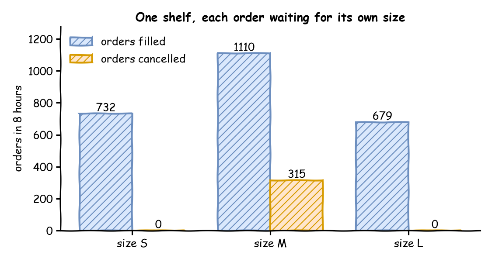

The shop now sells shirts in three sizes: small, medium and large. Shirts of every size go on one shelf. A new shirt arrives every 10 seconds on average, and a new order also arrives every 10 seconds on average. Each order is for one shirt of a given size. A customer cancels an order not filled within 10 minutes. Half the orders are for medium shirts, but only 4 shirts in 10 are medium. This page asks: which waiting order can use the shirt that arrives, and which orders go unfilled?
Decision: whether the shop's mix of shirt sizes is right for its orders.
Measures: the orders filled and cancelled for each size, and the shirts left on the shelf.
Runs: one run of a working day of 8 hours, with the seed 42, covering only taking shirts from the shelf: packing is left out.
Assumptions: shirts and orders of each size arrive at random, each at a steady rate.
What You Will Learn
This page shows how to:
hold items of several kinds on one shelf, in a store;
take only an item that matches the order, with a filter;
see which orders go unfilled when one kind is short.
What You Add
This page adds a shelf store, and a filter on the order's get that picks a shirt of the order's size. The order task has no resource: it waits only for its shirt, with the Patience of 10 minutes covering that wait.
One Shelf of Items
A store holds items, and each item is a value of its own. Here each shirt is a mapping such as {size: M}, and a restock task puts it on the shelf. Stores and Containers describes stores. Save the files from Full Files in one folder and run the commands there:
# A shirt every 10 seconds on average: 3 in 10 small, 4 medium, 3 largeshirts_s:{dist:exponential, rate:0.03, spawn:restock, attributes:{size:S}}shirts_m:{dist:exponential, rate:0.04, spawn:restock, attributes:{size:M}}shirts_l:{dist:exponential, rate:0.03, spawn:restock, attributes:{size:L}}# An order every 10 seconds on average: a quarter small, half medium, a quarter largeorders_s:{dist:exponential, rate:0.025, spawn:take_shirt, attributes:{size:S}}orders_m:{dist:exponential, rate:0.05, spawn:take_shirt, attributes:{size:M}}orders_l:{dist:exponential, rate:0.025, spawn:take_shirt, attributes:{size:L}}
SHIRTS and ORDERS map each size to its rate. Each arrival process passes its size to the task, as the full file shows.
Take the Right Item
A plain get takes the oldest item, whatever it is. A get with a filter takes the oldest item the filter accepts and waits while none does. In SimPy this is a FilterStore, whose get takes a function of the item. In desflow the filter is a condition. In it, item.<field> reads a field of the shirt on offer. The condition can also read every name that other conditions read, such as attr.size for the size the order is for:
take_shirt:# Takes the oldest shirt of the order's own size; waits while there is noneget:{store:shelf, filter:item.size == attr.size}# A customer cancels an order not filled within 10 minutespatience:10 min# Adds the shirt the get took to the finished eventitem_field:shirtpayload:{event_type:order_filled}
item_field: shirt adds the shirt the get took to the finished event's payload under the key shirt, as id_field adds the task id under the key it names (YAML Keys lists both).
@app.task(# Takes the oldest shirt of the order's own size; waits while there is noneget={"store":"shelf","filter":"item.size == attr.size"},# A customer cancels an order not filled within 10 minutespatience="10 min",)deftake_shirt(task_id:int,item):# `item` is the shirt the get tookreturn{"event_type":"order_filled","shirt":item}
The builder also takes a function of the item, such as "filter": lambda shirt: shirt["size"] == "M".
deftake_shirt(env,shelf,key,size,task_id):defpublish(value):env.publish_event(key,value,task="take_shirt",instance=task_id)publish({"status":"queued"})# Takes the oldest shirt of the order's own size; waits while there is noneget=shelf.get(filter=lambdashirt:shirt["size"]==size)# A customer cancels an order not filled within 10 minutesyieldget|env.timeout(PATIENCE)ifnotget.triggered:get.cancel()# out of the queue, so it never takes a shirt laterpublish({"status":"reneged"})returnpublish({"status":"started"})publish({"event_type":"order_filled","shirt":get.value})
shelf.get(filter=...) is SimPy's FilterStore.get. Cancelling a get that has not succeeded takes it out of the queue, so it never takes a shirt later.
When a shirt arrives, it is offered to the waiting orders one at a time, oldest first, and the first order whose filter accepts it takes it. A medium order waiting at the front does not stop a small order behind it from taking a small shirt, as it would if all orders waited in one line for the next shirt.
patience covers the wait for the get, as it covers a wait for a resource. A get that gives up takes nothing later: the shirt that would have filled it stays on the shelf for the next order.
What You Get and Why
Which waiting order can use the shirt that arrives? The oldest order of the shirt's size, and no other. In one run of 8 hours with the seed 42, 315 medium orders are cancelled, and no small or large one. Medium orders are half of all orders, but medium shirts are only 4 in 10:

Each tab prints the counts:
The blueprint publishes its statistics once, at the end of the 8 hours:
# Orders finished for each size, and the orders that gave up waitingdesflowrunfiltered_inventory.yaml--stdout|grep-E'orders_[sml]\.finished"|take_shirt\.reneged"'|tail-4
Each flows.orders_<size>.finished is the number of filled orders of that size. tasks.take_shirt.reneged counts the cancelled orders of every size together. A cancelled order leaves its flow without finishing it, so a size's cancelled orders are its flow's started minus finished minus in_system, the orders still waiting at the end. For medium orders that is 1,454 − 1,110 − 29 = 315, all of the cancelled orders.
A filtered store works like one shelf with a separate queue for each kind of item. Orders and shirts of each size arrive at their own rates, on average:
Size
An order arrives
A shirt arrives
Small
every 40 seconds (1.5 a minute, rate: 0.025)
every 33 seconds (1.8 a minute, rate: 0.03)
Medium
every 20 seconds (3 a minute, rate: 0.05)
every 25 seconds (2.4 a minute, rate: 0.04)
Large
every 40 seconds (1.5 a minute, rate: 0.025)
every 33 seconds (1.8 a minute, rate: 0.03)
Medium orders outnumber medium shirts all day: they ask for 0.05 shirts a second and get 0.04, a utilisation of 1.25. So their queue would grow without end if customers did not cancel after 10 minutes. There are more small and large shirts than orders of those sizes, so every small and large order is filled before its customer cancels. The shirts left over, 248 at the end of the run, wait on the shelf, which has room for 1,000.
A filtered store works like one shelf with a separate queue for each kind of item.
A kind whose orders outnumber its items has a queue that grows, even when the shelf holds other items.
Patience on the wait ends that growth, at the cost of cancelled orders.
Full Files
Full files
The Builder and Low-level files count the outcomes with _Outcomes, a sink of their own. Its run method takes each batch of records from the sink's queue and counts the filled and cancelled orders by size. Egress describes how every sink takes its records.
# The Filtered Inventory tutorial: each order waits for a shirt of its own size.# Run it with: desflow run filtered_inventory.yamlsimulation:sim_id:Shopfactor:0random_seed:42stores:# Shirts of every size on one shelf, each item a mapping such as {size: M}shelf:{current_cap:1000, max_cap:1000}arrivals:# A shirt every 10 seconds on average: 3 in 10 small, 4 medium, 3 largeshirts_s:{dist:exponential, rate:0.03, spawn:restock, attributes:{size:S}}shirts_m:{dist:exponential, rate:0.04, spawn:restock, attributes:{size:M}}shirts_l:{dist:exponential, rate:0.03, spawn:restock, attributes:{size:L}}# An order every 10 seconds on average: a quarter small, half medium, a quarter largeorders_s:{dist:exponential, rate:0.025, spawn:take_shirt, attributes:{size:S}}orders_m:{dist:exponential, rate:0.05, spawn:take_shirt, attributes:{size:M}}orders_l:{dist:exponential, rate:0.025, spawn:take_shirt, attributes:{size:L}}tasks:restock:# The shirt goes on the shelf, as a mapping with its sizeput:{store:shelf}payload:{}attributes:[size]take_shirt:# Takes the oldest shirt of the order's own size; waits while there is noneget:{store:shelf, filter:item.size == attr.size}# A customer cancels an order not filled within 10 minutespatience:10 min# Adds the shirt the get took to the finished eventitem_field:shirtpayload:{event_type:order_filled}# The counts of each arrival's orders, published once, at the end of the 8 hoursstats:{level:basic, interval:8 h}egress:-type:Consolerun:until:8 h
"""The Filtered Inventory tutorial: each order waits for a shirt of its own size.Shirts of three sizes arrive on one shelf, and orders of three sizes take them.Every record is printed to the terminal. The script then prints, for each size, howmany orders were filled and how many were cancelled. To see only those lines, run:python filtered_inventory.py 2>/dev/null"""importloggingfromcollectionsimportCounterfromdesflowimportConsoleEgress,SimulationContextlogging.basicConfig(level=logging.INFO,format="%(levelname)s [%(asctime)s] %(message)s")# A shirt every 10 seconds on average: 3 in 10 small, 4 medium, 3 largeSHIRTS={"S":0.03,"M":0.04,"L":0.03}# An order every 10 seconds on average: a quarter small, half medium, a quarter largeORDERS={"S":0.025,"M":0.05,"L":0.025}defshop()->SimulationContext:"""The shop with one shelf of shirts and orders of three sizes."""app=SimulationContext(sim_id="Shop",factor=0,random_seed=42).add_egress(ConsoleEgress())# Shirts of every size on one shelf, each item a mapping such as {"size": "M"}app.add_store("shelf",current_cap=1000,max_cap=1000)forsize,rateinSHIRTS.items():name=f"shirts_{size.lower()}"app.add_arrival(name,dist="exponential",rate=rate,attributes={"size":size})forsize,rateinORDERS.items():name=f"orders_{size.lower()}"app.add_arrival(name,dist="exponential",rate=rate,attributes={"size":size})# The shirt goes on the shelf, as a mapping with its size@app.task(put={"store":"shelf"})defrestock(task_id:int,entity):return{"size":entity.attributes["size"]}@app.task(# Takes the oldest shirt of the order's own size; waits while there is noneget={"store":"shelf","filter":"item.size == attr.size"},# A customer cancels an order not filled within 10 minutespatience="10 min",)deftake_shirt(task_id:int,item):# `item` is the shirt the get tookreturn{"event_type":"order_filled","shirt":item}defspawn(arrival:str,task,name:str):defloop(context:SimulationContext):whileTrue:entity=yieldcontext.wait_for_arrival(arrival)context.spawn(task(context.next_instance(name),entity=entity))app.arrival_loop(arrival)(loop)forsizeinSHIRTS:spawn(f"shirts_{size.lower()}",restock,"restock")forsizeinORDERS:spawn(f"orders_{size.lower()}",take_shirt,"take_shirt")returnappclass_Outcomes:"""An egress that counts each order's outcome, by size, from its events."""def__init__(self):self.counts=Counter()asyncdefrun(self,egress_queue):importasyncioimportqueuetry:whileTrue:try:forrecordinegress_queue.get_nowait():count(self.counts,record)exceptqueue.Empty:awaitasyncio.sleep(0.01)exceptasyncio.CancelledError:passdefcount(counts:Counter,record:dict)->None:"""Counts a filled or cancelled order, by the size in its key."""ifrecord["stream_type"]!="event"orrecord["task"]!="take_shirt":returnsize=record["key"].split("-")[0][-1].upper()value=record["value"]ifvalue.get("event_type")=="order_filled":counts[(size,"filled")]+=1elifvalue.get("status")=="reneged":counts[(size,"cancelled")]+=1defoutcomes()->Counter:"""Runs eight hours and counts filled and cancelled orders by size."""app=shop()outcome=_Outcomes()app.add_egress(outcome)app.run(until="8 h")returnoutcome.countsif__name__=="__main__":counts=outcomes()forsizeinORDERS:print(f"size {size}: {counts[(size,'filled')]:4} filled, "f"{counts[(size,'cancelled')]:4} cancelled")
"""The Filtered Inventory tutorial: each order waits for a shirt of its own size.Shirts of three sizes arrive on one shelf, and orders of three sizes take them.Every record is printed to the terminal. The script then prints, for each size, howmany orders were filled and how many were cancelled. To see only those lines, run:python filtered_inventory_low_level.py 2>/dev/null"""importitertoolsimportloggingfromcollectionsimportCounterfromdesflowimport(CapacityConfig,ConsoleEgress,DistributionConfig,DynamicRealtimeEnvironment,DynamicStore,Sampler,SimParameter,)logging.basicConfig(level=logging.INFO,format="%(levelname)s [%(asctime)s] %(message)s")# A shirt every 10 seconds on average: 3 in 10 small, 4 medium, 3 largeSHIRTS={"S":0.03,"M":0.04,"L":0.03}# An order every 10 seconds on average: a quarter small, half medium, a quarter largeORDERS={"S":0.025,"M":0.05,"L":0.025}PATIENCE=600# a customer cancels an order not filled within 10 minutesPARAMS=SimParameter(sim_id="Shop",arrival={**{f"shirts_{s.lower()}":DistributionConfig(dist="exponential",rate=r)fors,rinSHIRTS.items()},**{f"orders_{s.lower()}":DistributionConfig(dist="exponential",rate=r)fors,rinORDERS.items()},},# Shirts of every size on one shelf, each item a mapping such as {"size": "M"}stores={"shelf":CapacityConfig(current_cap=1000,max_cap=1000)},)defrestock(env,shelf,key,size,task_id):"""The shirt goes on the shelf, as a mapping with its size."""yieldshelf.put({"size":size})env.publish_event(key,{"size":size},task="restock",instance=task_id)deftake_shirt(env,shelf,key,size,task_id):defpublish(value):env.publish_event(key,value,task="take_shirt",instance=task_id)publish({"status":"queued"})# Takes the oldest shirt of the order's own size; waits while there is noneget=shelf.get(filter=lambdashirt:shirt["size"]==size)# A customer cancels an order not filled within 10 minutesyieldget|env.timeout(PATIENCE)ifnotget.triggered:get.cancel()# out of the queue, so it never takes a shirt laterpublish({"status":"reneged"})returnpublish({"status":"started"})publish({"event_type":"order_filled","shirt":get.value})defgenerator(env,sampler,shelf,arrival,size,task,ids):gap=env.registry.get_config(f"Shop.arrival.{arrival}")fornumberinitertools.count(1):yieldenv.timeout(sampler.sample(gap))env.process(task(env,shelf,f"{arrival}-{number}",size,next(ids)))class_Outcomes:"""An egress that counts each order's outcome, by size, from its events."""def__init__(self):self.counts=Counter()asyncdefrun(self,egress_queue):importasyncioimportqueuetry:whileTrue:try:forrecordinegress_queue.get_nowait():count(self.counts,record)exceptqueue.Empty:awaitasyncio.sleep(0.01)exceptasyncio.CancelledError:passdefcount(counts:Counter,record:dict)->None:"""Counts a filled or cancelled order, by the size in its key."""ifrecord["stream_type"]!="event"orrecord["task"]!="take_shirt":returnsize=record["key"].split("-")[0][-1].upper()value=record["value"]ifvalue.get("event_type")=="order_filled":counts[(size,"filled")]+=1elifvalue.get("status")=="reneged":counts[(size,"cancelled")]+=1defrun(until=8*3600,factor=0.0,sinks=()):env=DynamicRealtimeEnvironment(factor=factor)env.registry.register_sim_parameter(PARAMS)env.setup_egress([ConsoleEgress(),*sinks])shelf=DynamicStore(env,"Shop","shelf")sampler=Sampler(seed=42)restocks,takes=itertools.count(),itertools.count()forsizeinSHIRTS:arrival=f"shirts_{size.lower()}"env.process(generator(env,sampler,shelf,arrival,size,restock,restocks))forsizeinORDERS:arrival=f"orders_{size.lower()}"env.process(generator(env,sampler,shelf,arrival,size,take_shirt,takes))try:env.run(until=until)finally:env.teardown()returnenvdefoutcomes()->Counter:"""Runs eight hours and counts filled and cancelled orders by size."""outcome=_Outcomes()run(sinks=[outcome])returnoutcome.countsif__name__=="__main__":counts=outcomes()forsizeinORDERS:print(f"size {size}: {counts[(size,'filled')]:4} filled, "f"{counts[(size,'cancelled')]:4} cancelled")